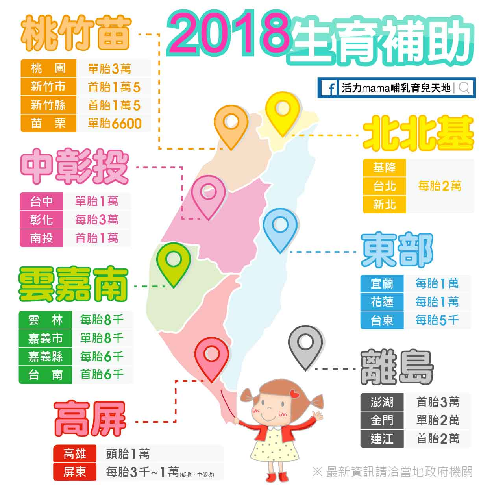
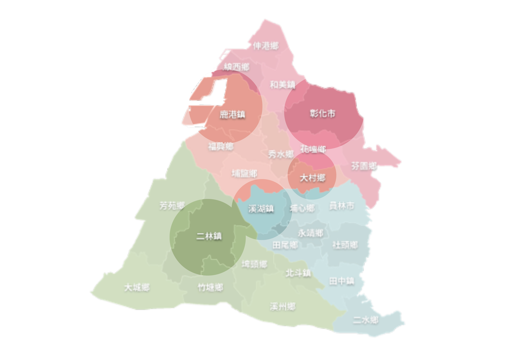
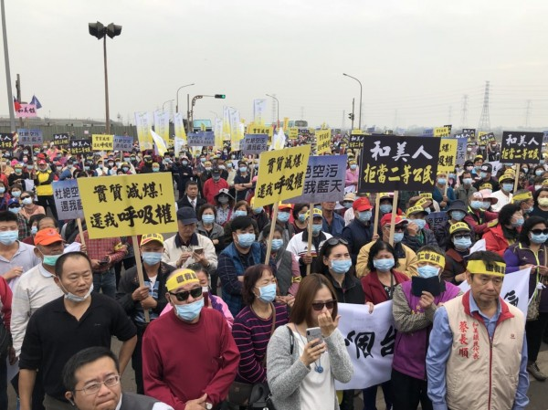
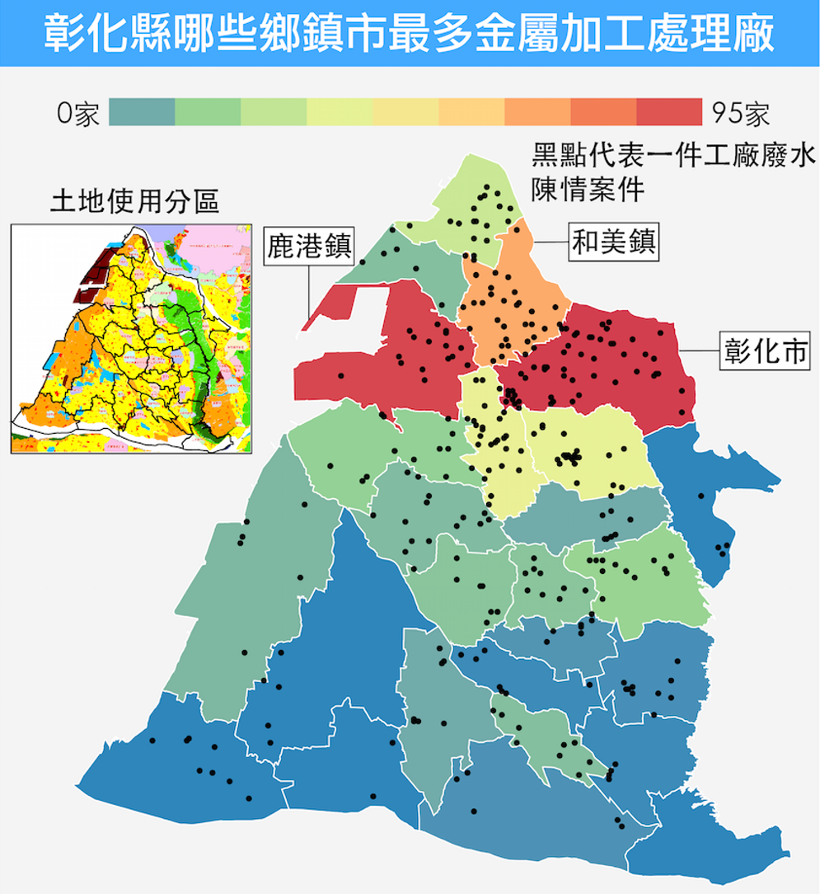

彰化文化
彰化之美，由你發現
想要深入了解彰化縣的人文特色嗎？讓我們跟著在地人透過影片實錄實際走訪一遭吧！
一開始我們先帶大家品嚐道地口味的彰化肉圓，吃飽後再前往有著悠久歷史的鹿港龍
山寺，喜歡文藝風格的朋友也可以將桂花巷列入走訪名單，這裡有可以拍照留念的彩
繪牆面，也有藝文表演的欣賞以及手工藝的課程，很適合週末假日全家大小前來遊玩。
彰化之美，由你發現
想要深入了解彰化縣的人文特色嗎？讓我們跟著在地人透過影片實錄實際走訪一遭吧！
一開始我們先帶大家品嚐道地口味的彰化肉圓，吃飽後再前往有著悠久歷史的鹿港龍
山寺，喜歡文藝風格的朋友也可以將桂花巷列入走訪名單，這裡有可以拍照留念的彩
繪牆面，也有藝文表演的欣賞以及手工藝的課程，很適合週末假日全家大小前來遊玩。
| 老人福利

| 子宮頸癌疫苗

| 弱勢就醫

| 生育補助
| 罹癌兒童補助

| 肺功能巡迴篩選服務

| 長照問題
| 外籍看護

| 空氣汙染
| 重金屬農田、水汙染
No.151, Daxue Rd., Sanxia Dist., New Taipei City 237, Taiwan
candy860527@gmail.com
0988728723
 |
 |
 |
 |